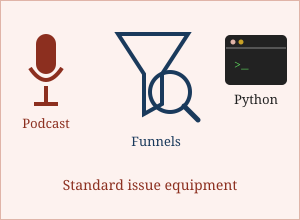

Three Facts, Declassified

- She has hosted a marketing podcast since 2024, which means she has spent two years discovering how many people say "um" and how few of them realise it.
- She holds an MBA and two professional marketing fellowships, and in September 2026 was comprehensively defeated by a missing quotation mark.
- She is building a communication support device for people who struggle to speak, which has taught her that the gap between "it works on my laptop" and "it works" is roughly the width of the Atlantic.
Survival Guide for Working With Me
Follow these steps in order. Deviating from the order is permitted but has been known to cause incidents.
- Tell me the actual problem, not the solution you have already decided on. I will find the problem anyway and we will both have wasted a meeting.
- Send the data before the call. I read it. I will have questions, and they will be specific.
- Do not say "we need more brand awareness" unless you are prepared to define it in a number.
- If something is broken, say so early. I have never once been annoyed by an early warning. I have frequently been annoyed by a late one.
- Book me before 3pm. My afternoons are committed and no amount of enthusiasm will move them.
- If I go quiet for a day, I am not ignoring you. I am reading something properly before answering.
Greatest Weaknesses
- Takes on too much. Capable of holding a consulting practice, a job search, a podcast, a master's degree and two side ventures simultaneously. Capable is doing a lot of work in that sentence.
- Cannot leave a wrong number alone. Will spend forty minutes finding out why a figure is off by one cent when nobody asked and nobody cares.
- Allergic to vagueness. Physically unable to accept "it's performing well" as a sentence.
Future Ambitions
In the immediate term: to finish the Master of Digital Media in December 2026 and be able to read an unfamiliar piece of code, work out what it does, and explain why, out loud, without flinching.
In the medium term: to lead growth at a Canadian company that has a real product and an acquisition problem worth solving, while keeping the consulting practice alive on the side.
In the long term: to get the communication support device out of the prototype stage and into the hands of someone who actually needs it. That one is not a joke and it is the only item on this page written entirely without exaggeration.
More at olubunmibalogun.com, which is where the serious version of all this lives.